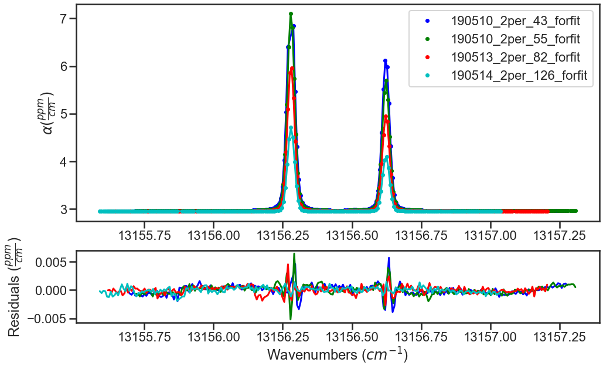

Fitting Experimental Spectra¶
Provided in the MATS v2 release are several examples highlighting MATS capabilities, which can be found in the MATS examples folder.
This example fits isolated Oxygen A-Band transitions in experimental spectra
Import Modules and Set-Up¶
This example starts with importing modules and setting up file locations
import numpy as np
import pandas as pd
import os, sys
import matplotlib.pyplot as plt
from matplotlib import gridspec
%matplotlib inline
import MATS
Optional import of seaborn package for figure generation
import seaborn as sns
sns.set_style("whitegrid")
sns.set_style("ticks")
sns.set_context("poster")
If not working within the MATS file structure, change the path to the working directory that contains experimental spectra or to the folder that you want to work in.
os.chdir(path)
Load Spectra from files¶
There are two options for generating Spectrum objects. The first is from a file by instantiating an instance of the class, which is the focus of this example. The second option is by using the simulate_spectrum() function described in the fitting synthetic spectra example.
Before generating Spectrum objects from your experimental data, it is helpful to set some variables for terms that will be used in all of the Spectrum objects and/or throughout the fitting. In this example the minimum intensity threshold for simulation (IntensityThreshold), the minimum line intensity of lines fit in the analysis (Fit_Intensity), the order of the polynomial used in the baseline fits, and the names of columns used for the absorption, frequency, pressure, and temperature data are defined at the top of the example.
wave_range = 1.5 #range outside of experimental x-range to simulate
IntensityThreshold = 1e-30 #intensities must be above this value to be simulated
Fit_Intensity = 1e-24 #intensities must be above this value for the line to be fit
order_baseline_fit = 1
tau_column = 'Corrected Tau (us)' # Mean tau/us
freq_column = 'Total Frequency (Detuning)' # Total Frequency /MHz
pressure_column = 'Cavity Pressure /Torr'
temperature_column = 'Cavity Temperature Side 2 /C'
After that, 4 instances of the Spectrum class are instantiated from 4 experimental spectra. In the class instantiation, the mole fraction of the oxygen sample used is defined, the etalon amplitude and period are defined, the sample is confirmed to be at natural abundance, the diluent is set to air, and the columns defined for pressure, temperature, frequency, and absorbance data are set. All of these spectra were collected at nominally 296K, so the nominal temperature is set to be 296. This variable is only used for a flag as to whether to allow temperature exponents to be floatable parameters and for generation of line mixing parameters for each nominal temperature as the temperature dependence of line mixing is not currently implemented.
spec_1 = MATS.Spectrum('190510_2per_43_forfit',
molefraction = { 7 :0.01949}, natural_abundance = True, diluent = 'air',
etalons = {1:[0.001172, 1.19574]},
input_freq = True, frequency_column = freq_column,
input_tau = True, tau_column = tau_column, tau_stats_column = None,
pressure_column = pressure_column, temperature_column = temperature_column,
nominal_temperature = 296, x_shift = 0.00)
spec_2 = MATS.Spectrum('190510_2per_55_forfit',
molefraction = { 7 : 0.01949}, natural_abundance = True, diluent = 'air',
etalons = {1:[0.001172, 1.19574]},
input_freq = True, frequency_column = freq_column,
input_tau = True, tau_column = tau_column, tau_stats_column = None,
pressure_column = pressure_column, temperature_column = temperature_column,
nominal_temperature = 296, x_shift = 0.00)
spec_3 = MATS.Spectrum('190513_2per_82_forfit',
molefraction = { 7 :0.01949}, natural_abundance = True, diluent = 'air',
etalons = {1:[0.001172, 1.19574]},
input_freq = True, frequency_column = freq_column,
input_tau = True, tau_column = tau_column, tau_stats_column = None,
pressure_column = pressure_column, temperature_column = temperature_column,
nominal_temperature = 296, x_shift = 0.00)
spec_4 = MATS.Spectrum('190514_2per_126_forfit',
molefraction = { 7 :0.01949}, natural_abundance = True, diluent = 'air',
etalons = {1:[0.001172, 1.19574]},
input_freq = True, frequency_column = freq_column,
input_tau = True, tau_column = tau_column, tau_stats_column = None,
pressure_column = pressure_column, temperature_column = temperature_column,
nominal_temperature = 296, x_shift = 0.00)
The Spectrum.plot_wave_alpha() function can be called to plot any of the spectra.
spec_1.plot_wave_alpha()

Generate a Dataset¶
If the parameter line list hasn’t been read in from a .csv file, then do that now making sure to switch to the appropriate directories as needed. This file can be generated following the Generating Parameter Line lists. Alternatively, the code block below shows how to use the py:func:LoadLineListData function to read in the line list provided for the Oxygen A-Band.
from MATS.linelistdata import linelistdata
PARAM_LINELIST = linelistdata['O2_ABand_Drouin_2017_linelist']
The next step is to combine all desired Spectrum objects into a Dataset object, where we give the dataset a name and specify the initial parameter line list to use for the fits.
SPECTRA = MATS.Dataset([spec_1, spec_2, spec_3, spec_4], 'Line Intensity', baseline_order = order_baseline_fit)
The Dataset class contains a function to generate a baseline line list, analogous to the one for the parameter line list (done outside of this example), based on the order of the baselines, etalons, molecules, x-shift parameters, and segments as defined by both the spectrum objects.
BASE_LINELIST = SPECTRA.generate_baseline_paramlist()
Generate Fit Parameter Files¶
The next section of code uses the Generate_FitParam_File class to define what line shape to use for the initial fits, whether to use line mixing, the minimum line intensity to fit a line, mimimum intensity to included in the simulation, and for each line parameter whether that parameter is going to be constrained across all spectra or whether there will be a parameter for each spectrum (multi-spectrum vs single-spectrum fits) on a parameter by parameter basis. In the example below, the SDVP line profile without line mixing will be used to fit lines with line intensities greater than 1e-24 and the line centers and line intensities will be allowed to float for each line, while all other lines are constrained across all spectra in the dataset. The additional_columns parameter allows for inclusion of additional columns in the line shape parameter line list to be included in the output file.
FITPARAMS = MATS.Generate_FitParam_File(SPECTRA, PARAM_LINELIST, BASE_LINELIST, lineprofile = 'SDVP', linemixing = False,
fit_intensity = Fit_Intensity, threshold_intensity = IntensityThreshold, sim_window = wave_range,
nu_constrain = False, sw_constrain = False, gamma0_constrain = True, delta0_constrain = True,
aw_constrain = True, as_constrain = True,
nuVC_constrain = True, eta_constrain =True, linemixing_constrain = True,
additional_columns = ['trans_id', 'local_lower_quanta', 'm'])
The next step is to generate fit parameter and baseline line lists that include columns that specify whether that parameter should be varied during fitting, in addition to adding uncertainty columns for the fit error for each parameter. For the following example the line centers, line intensities, collisional half-widths, and speed-dependent broadening terms will be floated for all main oxygen isotopes for lines where the line intensity is greater than 1e-24. Additionally, the baseline terms will float, as will the etalon amplitude and phase.
FITPARAMS.generate_fit_param_linelist_from_linelist(vary_nu = {7:{1:True, 2:False, 3:False}}, vary_sw = {7:{1:True, 2:False, 3:False}},
vary_gamma0 = {7:{1: True, 2:False, 3: False}, 1:{1:False}}, vary_n_gamma0 = {7:{1:True}},
vary_delta0 = {7:{1: False, 2:False, 3: False}, 1:{1:False}}, vary_n_delta0 = {7:{1:True}},
vary_aw = {7:{1: True, 2:False, 3: False}, 1:{1:False}}, vary_n_gamma2 = {7:{1:False}},
vary_as = {}, vary_n_delta2 = {7:{1:False}},
vary_nuVC = {7:{1:False}}, vary_n_nuVC = {7:{1:False}},
vary_eta = {}, vary_linemixing = {7:{1:False}})
FITPARAMS.generate_fit_baseline_linelist(vary_baseline = True, vary_molefraction = {7:False, 1:False}, vary_xshift = False,
vary_etalon_amp= True, vary_etalon_period= False, vary_etalon_phase= True)
These functions will generate .csv files corresponding to these selections, which are read in by the Fit_DataSet class instantiation. This means that edits can be made manually to the .csv files or reading in the .csv, editing, and resaving before the next code segment is run.
Fit Dataset¶
Instantiating the Fit_DataSet class reads in the information from the baseline and parameter linelists generated in the previous step. It also allows for limits to be placed on the parameters, so that they don’t result in divergent solutions. The example below includes several limits including limiting the line center to be within 0.1 cm-1 of the initial guess and the Line intensity to be within a factor of 2 of the intial guess. Placing limits on the parameters can be restrictive on the solution and cause the fit to not converge or return NaN for the standard error if it doesn’t allow for a local minima to be found. The Fit_DataSet class also allows for the option to weight_spectra, currently this is set to False. Later in this example we will explore using weights in fitting.
fit_data = MATS.Fit_DataSet(SPECTRA,'Baseline_LineList', 'Parameter_LineList', minimum_parameter_fit_intensity = Fit_Intensity, weight_spectra = False,
baseline_limit = False, baseline_limit_factor = 10,
molefraction_limit = False, molefraction_limit_factor = 1.1,
etalon_limit = False, etalon_limit_factor = 2, #phase is constrained to +/- 2pi,
x_shift_limit = False, x_shift_limit_magnitude = 0.5,
nu_limit = True, nu_limit_magnitude = 0.1,
sw_limit = True, sw_limit_factor = 2,
gamma0_limit = False, gamma0_limit_factor = 3, n_gamma0_limit= False, n_gamma0_limit_factor = 50,
delta0_limit = False, delta0_limit_factor = 2, n_delta0_limit = False, n_delta0_limit_factor = 50,
SD_gamma_limit = False, SD_gamma_limit_factor = 2, n_gamma2_limit = False, n_gamma2_limit_factor = 50,
SD_delta_limit = False, SD_delta_limit_factor = 50, n_delta2_limit = False, n_delta2_limit_factor = 50,
nuVC_limit = False, nuVC_limit_factor = 2, n_nuVC_limit = False, n_nuVC_limit_factor = 50,
eta_limit = False, eta_limit_factor = 50, linemixing_limit = False, linemixing_limit_factor = 50)
The next step is to generate the lmfit params dictionary object through the Fit_DataSet.generate_params() function. This translates baseline and parameter line list .csv files into a lmfit parameter dictionary that is used in the fits. After the parameters object is generated you can use the keys to set values and impose constraints on individual parameters, if desired. While this is not coded in the MATS toolkit, it is incredibly powerful as it lets you define min, max, vary, and expression values for any parameter. In the example below, two additional constraints are imposed on specific fit parameters. The first constrains all speed-dependent width parameters to be between the values of 0.01 and 0.25 and the second forces the amplitude of the etalon to be constant across all spectra.
params = fit_data.generate_params()
for param in params:
if 'SD_gamma' in param:
params[param].set(min = 0.01, max = 0.25)
if 'etalon_1_amp' in param:
if param != 'etalon_1_amp_1_1':
params[param].set(expr='etalon_1_amp_1_1')
The params file is then used to fit the spectra in the dataset using the Fit_DataSet.fit_data() function, where the result is a lmfit result object. The lmft prettyprint function prints the parameter fit results. Included below is an abbreviated prettyprint output that not only shows the fit result values and standard errors, but also highlights that constraints were imposed on the SD_gamma (speed dependent broadening) parameters and an expression was imposed on the etalon_amplitudes. It also shows that the there is a line intensity reported for every line and spectrum (sw_spectrum number_ line) as the line intensities were not constrained to global fits. The reported sw shows that the fitted line intensity value is scaled by the minimum fit value. This scalar term is saved in a column called sw_scale_factor for reference. Scaling the line intensity aids in the fitting as line intensities are so much smaller than other fitted parameters.
result = fit_data.fit_data(params, wing_cutoff = 25)
print (result.params.pretty_print())
Name Value Min Max Stderr Vary Expr Brute_Step
Pressure_1_1 0.07911 -inf inf 0 False None None
Pressure_2_1 0.06556 -inf inf 0 False None None
Pressure_3_1 0.04602 -inf inf 0 False None None
Pressure_4_1 0.02488 -inf inf 0 False None None
SD_delta_air_line_1 0 -inf inf 0 False None None
SD_delta_air_line_10 0 -inf inf 0 False None None
SD_delta_air_line_13 0 -inf inf 0 False None None
SD_delta_air_line_25 0 -inf inf 0 False None None
SD_delta_air_line_26 0 -inf inf 0 False None None
SD_gamma_air_line_1 0.1 0.01 0.25 0 False None None
SD_gamma_air_line_10 0.1137 0.01 0.25 0.0008273 True None None
SD_gamma_air_line_13 0.1313 0.01 0.25 0.001115 True None None
SD_gamma_air_line_25 0.09 0.01 0.25 0 False None None
SD_gamma_air_line_26 0.1 0.01 0.25 0 False None None
. . .
etalon_1_amp_1_1 0.001762 -inf inf 4.007e-05 True None None
etalon_1_amp_2_1 0.001762 -inf inf 4.007e-05 False etalon_1_amp_1_1 None
etalon_1_amp_3_1 0.001762 -inf inf 4.007e-05 False etalon_1_amp_1_1 None
etalon_1_amp_4_1 0.001762 -inf inf 4.007e-05 False etalon_1_amp_1_1 None
etalon_1_freq_1_1 1.196 -inf inf 0 False None None
etalon_1_freq_2_1 1.196 -inf inf 0 False None None
etalon_1_freq_3_1 1.196 -inf inf 0 False None None
etalon_1_freq_4_1 1.196 -inf inf 0 False None None
etalon_1_phase_1_1 -0.3479 -inf inf 0.04585 True None None
etalon_1_phase_2_1 -0.09384 -inf inf 0.04288 True None None
etalon_1_phase_3_1 -1.04 -inf inf 0.04446 True None None
etalon_1_phase_4_1 -1.266 -inf inf 0.04394 True None None
gamma0_air_line_1 0.04 -inf inf 0 False None None
gamma0_air_line_10 0.04501 -inf inf 4.919e-05 True None None
gamma0_air_line_13 0.04339 -inf inf 7.531e-05 True None None
gamma0_air_line_25 0.04 -inf inf 0 False None None
gamma0_air_line_26 0.04 -inf inf 0 False None None
. . .
sw_1_line_1 4.369 2.184 8.738 0 False None None
sw_1_line_10 4.735 2.4 9.598 0.0008558 True None None
sw_1_line_13 3.087 1.562 6.246 0.0007302 True None None
sw_1_line_25 2.083 1.042 4.166 0 False None None
sw_1_line_26 3.399 1.699 6.798 0 False None None
sw_2_line_1 4.369 2.184 8.738 0 False None None
sw_2_line_10 4.752 2.4 9.598 0.0006929 True None None
sw_2_line_13 3.091 1.562 6.246 0.0006913 True None None
sw_2_line_25 2.083 1.042 4.166 0 False None None
sw_2_line_26 3.399 1.699 6.798 0 False None None
sw_3_line_1 4.369 2.184 8.738 0 False None None
sw_3_line_10 4.744 2.4 9.598 0.0007446 True None None
sw_3_line_13 3.095 1.562 6.246 0.0007499 True None None
sw_3_line_25 2.083 1.042 4.166 0 False None None
sw_3_line_26 3.399 1.699 6.798 0 False None None
sw_4_line_1 4.369 2.184 8.738 0 False None None
sw_4_line_10 4.8 2.4 9.598 0.001158 True None None
sw_4_line_13 3.118 1.562 6.246 0.00117 True None None
sw_4_line_25 2.083 1.042 4.166 0 False None None
sw_4_line_26 3.399 1.699 6.798 0 False None None
The last segment of code provides residual plots and updates residuals through the Fit_DataSet.residual_analysis() and
Dataset.plot_model_residuals() functions, updates the parameter and baseline line lists through
Fit_DataSet.update_params(), and generates a summary file with the fit results using
Dataset.generate_summary_file().
fit_data.residual_analysis(result, indv_resid_plot=True)
fit_data.update_params(result)
SPECTRA.generate_summary_file(save_file = True)
SPECTRA.plot_model_residuals()

Call to the Spectrum.fft_spectrum() function takes an FFT of the residuals. If we hadn’t included the etalon, the result of the Spectrum.fft_spectrum() function would show a peak with the most abundant period being 1.271443 cm-1 and an amplitude of 0.001364, which were used as the initial guess for the etalon in the spectrum class definitions. The more etalon periods present in the spectral region being fit the more precise the etalon amplitude and frequency determined by the FFT will be.
If we hadn’t included the etalon, the fit residuals and FFT would like the plots below:


Using these values as the etalon period and amplitude give the fit residuals shown in the use example above and when incorporated the FFT no longer shows a substantial peak at 1.271443 cm-1.

Explore the Ability to Weight Spectra¶
MATS v2 introduced the ability to weight spectra in two different ways, using the stats column defined for each spectrum or weighting the entire spectrum. In the first example below, we use use the same code that was introduced previously, but set the weight_spectra variable in the Fit_DataSet definitions to True.
This weights the contribution to the solution at each point in each spectrum by 1/tau_stats_column. If the tau_stats_column is not defined in the Spectrum then this will default to equal weights for all data points.
fit_data = MATS.Fit_DataSet(SPECTRA,'Baseline_LineList', 'Parameter_LineList', minimum_parameter_fit_intensity = Fit_Intensity, weight_spectra = True,
baseline_limit = False, baseline_limit_factor = 10,
molefraction_limit = False, molefraction_limit_factor = 1.1,
etalon_limit = False, etalon_limit_factor = 2, #phase is constrained to +/- 2pi,
x_shift_limit = False, x_shift_limit_magnitude = 0.5,
nu_limit = True, nu_limit_magnitude = 0.1,
sw_limit = True, sw_limit_factor = 2,
gamma0_limit = False, gamma0_limit_factor = 3, n_gamma0_limit= False, n_gamma0_limit_factor = 50,
delta0_limit = False, delta0_limit_factor = 2, n_delta0_limit = False, n_delta0_limit_factor = 50,
SD_gamma_limit = False, SD_gamma_limit_factor = 2, n_gamma2_limit = False, n_gamma2_limit_factor = 50,
SD_delta_limit = False, SD_delta_limit_factor = 50, n_delta2_limit = False, n_delta2_limit_factor = 50,
nuVC_limit = False, nuVC_limit_factor = 2, n_nuVC_limit = False, n_nuVC_limit_factor = 50,
eta_limit = False, eta_limit_factor = 50, linemixing_limit = False, linemixing_limit_factor = 50)
params = fit_data.generate_params()
for param in params:
if 'SD_gamma' in param:
if params[param].vary == True:
params[param].set(min = 0.01, max = 0.25)
if 'etalon_1_amp' in param:
if param != 'etalon_1_amp_1_1':
params[param].set(expr='etalon_1_amp_1_1')
result = fit_data.fit_data(params, wing_cutoff = 25)
print (result.params.pretty_print())
fit_data.residual_analysis(result, indv_resid_plot=True)
fit_data.update_params(result)
SPECTRA.generate_summary_file(save_file = True)
SPECTRA.plot_model_residuals()
For this example the statistics are relatively consistent across all points in the dataset, as shown in the plot below, so the fit residuals are very similar with some slight differences in the quality of fits and the parameter fit results.
The other option for weighting, that can be used with or without the point by point weighting, is to weight each spectrum by setting the spectrum weight value. The default for each spectrum is 1. This value can be set through the weight parameter in the spectrum definition or by using the Spectrum.set_weight() function, which is shown below.
For all weighting options, the residuals are adjusted by the weight factors. For this example, where the spec_1 is given a weight of 0 this effectively removed spec_1 from the solution consideration depicted by the flat residuals for spectrum 190510_2per_43_forfit.
spec_1.set_weight(0)
FITPARAMS = MATS.Generate_FitParam_File(SPECTRA, PARAM_LINELIST, BASE_LINELIST, lineprofile = 'SDVP', linemixing = False,
fit_intensity = Fit_Intensity, threshold_intensity = IntensityThreshold, sim_window = wave_range,
nu_constrain = False, sw_constrain = False, gamma0_constrain = True, delta0_constrain = True,
aw_constrain = True, as_constrain = True,
nuVC_constrain = True, eta_constrain =True, linemixing_constrain = True)
#additional_columns = ['trans_id', 'local_lower_quanta', 'm'])
FITPARAMS.generate_fit_param_linelist_from_linelist(vary_nu = {7:{1:True, 2:False, 3:False}}, vary_sw = {7:{1:True, 2:False, 3:False}},
vary_gamma0 = {7:{1: True, 2:False, 3: False}, 1:{1:False}}, vary_n_gamma0 = {7:{1:True}},
vary_delta0 = {7:{1: False, 2:False, 3: False}, 1:{1:False}}, vary_n_delta0 = {7:{1:True}},
vary_aw = {7:{1: True, 2:False, 3: False}, 1:{1:False}}, vary_n_gamma2 = {7:{1:False}},
vary_as = {}, vary_n_delta2 = {7:{1:False}},
vary_nuVC = {7:{1:False}}, vary_n_nuVC = {7:{1:False}},
vary_eta = {}, vary_linemixing = {7:{1:False}})
FITPARAMS.generate_fit_baseline_linelist(vary_baseline = True, vary_molefraction = {7:False, 1:False}, vary_xshift = False,
vary_etalon_amp= True, vary_etalon_period= False, vary_etalon_phase= True)
fit_data = MATS.Fit_DataSet(SPECTRA,'Baseline_LineList', 'Parameter_LineList', minimum_parameter_fit_intensity = Fit_Intensity, weight_spectra = True,
baseline_limit = False, baseline_limit_factor = 10,
molefraction_limit = False, molefraction_limit_factor = 1.1,
etalon_limit = False, etalon_limit_factor = 2, #phase is constrained to +/- 2pi,
x_shift_limit = False, x_shift_limit_magnitude = 0.5,
nu_limit = True, nu_limit_magnitude = 0.1,
sw_limit = True, sw_limit_factor = 2,
gamma0_limit = False, gamma0_limit_factor = 3, n_gamma0_limit= False, n_gamma0_limit_factor = 50,
delta0_limit = False, delta0_limit_factor = 2, n_delta0_limit = False, n_delta0_limit_factor = 50,
SD_gamma_limit = False, SD_gamma_limit_factor = 2, n_gamma2_limit = False, n_gamma2_limit_factor = 50,
SD_delta_limit = False, SD_delta_limit_factor = 50, n_delta2_limit = False, n_delta2_limit_factor = 50,
nuVC_limit = False, nuVC_limit_factor = 2, n_nuVC_limit = False, n_nuVC_limit_factor = 50,
eta_limit = False, eta_limit_factor = 50, linemixing_limit = False, linemixing_limit_factor = 50)
params = fit_data.generate_params()
for param in params:
if 'SD_gamma' in param:
if params[param].vary == True:
params[param].set(min = 0.01, max = 0.25)
if 'etalon_1_amp' in param:
if param != 'etalon_1_amp_1_1':
params[param].set(expr='etalon_1_amp_1_1')
result = fit_data.fit_data(params, wing_cutoff = 25)
print (result.params.pretty_print())
fit_data.residual_analysis(result, indv_resid_plot=True)
fit_data.update_params(result)
SPECTRA.generate_summary_file(save_file = True)
SPECTRA.plot_model_residuals()